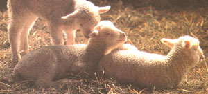
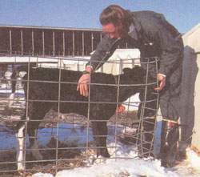

Three necessities for birthing healthy livestock By Elizabeth Barnes, DVMÂ Photos by Jon Reis/Photolink
As an ambulatory veterinarian, each day brings new challenges and unexpected cases for me. With spring just around the bend, I think it is timely to discuss one of the classic rituals of the season-birth of the new crop of young livestock. One of my greatest joys is sitting back and watching a damp calf take its first wobbly steps towards the warm bulk of mom that has been its existence for the past 10 months. But, the productive life of the neonate begins before its birth. I hope to help explain how a little forethought and planning before the birth of this spring's young stock can ensure that the animals are born strong while also preventing the occurrence of some neonatal diseases. There are three major factors to consider before the arrival of the young: maternal care and nutrition during both gestation and lactation, neonatal care, and the environment into which the animal is born. By controlling these three, you can practice sound animal husbandry, reaping the rewards of stronger healthier young stock.
At birth the neonate is born immunologically naive-essentially unable to mount any sort of response to infection. Upon entering the world, young animals are faced with a massive immune challenge, due to environmental contaminants. It is important to ensure a well bolstered immune system in a newborn foal, lamb, or calf, that will aid in preventing the occurrence of production limiting and potentially fatal diseases.
Food animals do not benefit from inutero transfer of protective antibodies through the placenta, therefore any immunity is acquired after birth. The colostrum, or first milk, is a specialized milk that the mother produces containing a large amount of immunoglobulins-proteins that provide specific immunity against infection.
Many factors are associated with the quantity and quality of colostrum production in a pregnant female. However, there are two factors that can be influenced through careful management of the pregnant female: nutrition and vaccination status of the dam.
The first factor in colostrum produc tion is nutrition for the pregnant female. An energy-deficient diet will decrease the mother's ability to produce optimum quantities of colostrum. It is imperative to feed a pregnant female according to her nutritional requirements. The diet of pregnant females has to be sufficient in order for mom to maintain a good nutritional plane, provide energy for the growing fetus (one or more), and allow for the beginning of milk and colostrum production. Actual rations (diets) vary from farm to farm so it is best to consult your veterinarian for advice on feeding your pregnant or lactating animal.
In farm animals, fetal growth remains at a relatively constant rate until the last third of gestation (pregnancy). During this time, the fetus will double in size, placing huge energy demands on the dam-this demand can be supplemented through proper nutrition. It is important, if possible, to identify which animals are carrying multiple young and to supplement their feed to accommodate the multiple fetuses. Veterinarians are able to diagnose twins by palpation in the early pregnant cow and horse, or with ultrasound in sheep and goats. Proper nutrition will prevent nutritional deficiencies in the dam and allow complete fetal development.
Pregnancy toxemia can occur in ewes and cows during the last third of gestation, and is a disease state that stems directly from a lack of energy for the dam. We usually see this syndrome in animals carrying twins or triplets which monopolize vast amounts of the energy from the mother's diet, transferring it to fetal growth and development. This state leaves the dam without essential nutrients and energy. In the ewe, the last 4-6 weeks of gestation are a critical period for nutritional support. Implementing an adequate feeding program for ewes relative to the number of
lambs they are carrying will result in ewes with pregnancy diseases, bigger and stronger lambs at birth, decreased lamb mortality and an increase of milk production which allows faster growing lambs.
The importance of nutrition during pregnancy is clear for the production of colostrum, but the dam's nutritional requirements do not stop there. Lactation is the single most energy demanding physiological state, and it is imperative to ensure that the lactating female is getting adequate nutrition to maintain herself and produce milk, either for her young or the bulk tank! Animals nursing multiple young will require additional feed, and, if possible, be prepared to feed these mothers in a separate area to encourage adequate feed intake.
The second controllable factor in good colostrum production is the vaccination of the dam. When the mother is vaccinated before giving birth, there is a rise in the maternal immunoglobulins that collect in the udder, forming a high quality colostrum. The appropriate vaccines depend upon the diseases encountered in your locality and it is best to consult your veterinarian concerning which vaccines are necessary.
Vaccination of the cow at seven months of gestation and two to three weeks before calving will provide colostrum rich in maternal immunoglobulins. At the time of the second vaccination, the cow should also be given an injection of vitamin E and selenium which is beneficial to both the dam and fetus, especially in areas where selenium deficiency has been encountered. This combination can prevent White Muscle Disease in the calves-a disease that targets the muscles of calves and manifests when the calves are very young. There is another important consideration at seven months of pregnancy in the cow. If the cow is still lactating (milking) at this time, she should be dried off-not milked again until she freshens (gives birth). This six week dry period is critical for the health of the cow's udder. During the first two weeks, the cow's udder will stop producing milk and return to a non-milking state. The following four weeks will allow the udder to repair and ready itself for the next lactation. It is also important not to milk a cow close to calving because of colostrum production. By milking her early you will reduce the quantity and quality of colostrum available for the calf (or two!).
You should vaccinate the ewe to ensure adequate maternal immunoglobulins in the colostrum 30 days before lambing. The vaccination routinely used for Clostridia bacteria covers tetanus. You should also give Vitamin E and selenium at this time, especially in selenium-deficient areas. While the ewes are in for vaccination, it is a good time to check the condition of the ewe to determine if she is getting adequate nutrition. At this point in gestation, each ewe should be getting one pound of concentrate in addition to daily roughage; it is important to increase the grain amount slowly to prevent indigestion. Many shepherds also shear their ewes at this time, so they may be easily identified, or they just shear around their udders, which is known as crutching. Frequently, new lambs will suck on tags of wool mistaking it for a teat, so crutching provides easier access to the udder for the lambs.
The pregnant mare should have her vaccinations boostered close to foaling to allow adequate colostral immunoglobulins. The mare should be vaccinated with an inactivated vaccine for Equine Rhinopneumonitis (Rhino) at months 5, 7, and 9 of pregnancy. A tetanus booster and vitamin E and selenium should be given approximately 30 days prior to foaling.
Neonatal care is the second important consideration in our preventative medicine program for healthy young stock. There are a few tried and true practices that if implemented can save time and prevent needless headaches. For all births, regardless of the species, if assistance is needed, it is important to get help in a timely fashion to prevent death of the young and possibly the mother. Primary neonatal care should happen within the first 12 hours of birth so it is wise to be at hand either at the birth or very soon thereafter.
The bond between a dam and her offspring is important and is based on the smell, taste, and sound of the young. In general the maternal instinct is very strong in our domestic animals so the dams know to attend to their young. Before leaving the animals to acquaint themselves, dip the newborn's navel in iodine solution that is greater than 7 percent iodine. This one minute procedure will sterilize the umbilicus and prevent infection from climbing the umbilical stump and entering the abdomen of the animal.
The neonate's intestines change in their absorptive capacity after twenty-four hours. After this time period, the immunoglobulins, important components, in the colostrum are no longer able to be absorbed. Therefore it is imperative to ensure that the newborn eats enough colostrum early enough to allow a good start to the animal's immunity and ability to fight off infection. The adequate amount of colostrum varies between species, but a good rule of thumb is 3-5 liters for a calf and 1-2 liters for a foal AS SOON AS POSSIBLE. Milking out the mom and bottle feeding will help determine the amount of colostrum ingested and the suckling action enhances absorption of maternal immunoglobulins from the colostrum. But, don't stop there! Make sure that the young is nursing readily and frequently during the first 24 hours of life. Continue to observe the suckling attempts of the young for the first three days of life. The level of nursing activity is an indicator of the general health of the neonate. Weakness due to illness will manifest itself as decreased nursing attempts and a weak suckle reflex on a finger.
Foals require further neonatal care within the first 12 hours of life in addition to adequate colostrum and navel dipping. Meconium is the first feces that any neonate passes and it is common for foals to get constipated with a meconium impaction. An enema can prevent this potentially life threatening situation. Furthermore, because horses are exquisitely sensitive to the bacteria that causes tetanus, tetanus anti-toxin should be administered at birth if the foal is born to an unvaccinated dam.
The final component in our perinatal care program concerns the environment, which has a major impact on neonatal survival. In the perfect world, cows would never calve in the muddiest area of the lot, and all animals would have individual maternity pens. A few general consideration about location when the birthing time approaches will provide a positive start for the neonate.
The environment holds many of the bacteria and viruses that cause neonatal disease. If you use maternity pens repeat edly, clean and disinfect them between use. Mucking out the soiled bedding and adding a layer of lime will help reduce the infectious challenge to the neonate present in the immediate environment. When considering a spot to create a maternity pen, be sure it is large enough for the species in consideration: the dam needs enough room to be able to turn a full circle, and room for the young. Too small of a pen will add stress to both mother and young, and increase the chances of maternal injury or injury of the young. Good ventilation, but not too drafty, is important for the neonate as is a tolerable temperature. Most importantly, a clean dry area for the foaling or calving is important. The other consideration are added benefits.
By observing these aspects of perinata I care it is easy to prevent the occurrence of some neonatal diseases. Maternal carc and nutrition, neonatal care, and the environment into which the young are born are steps that can yield stronger, healthier young. This plan is by no means totally complete. Rather it is a spring board to augment already existing practices yoti may have or stimulate further interest on the subject. Prevention of neonatal disease through management will make the spring birthing season more enjoyable and profitable for all. Happy calving!
|
 |
|
|
|
|
 |
|